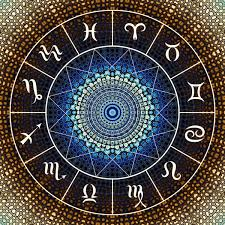

Останні новини
Таро: Відкриття нових шляхів
Дослідження показують, як карти Таро можуть допомогти вам зрозуміти своє внутрішнє «я».
Читати далі

Астрологія в повсякденному житті
Як астрологія може вплинути на ваші щоденні рішення? Читайте наші поради.
Читати даліНовини з світу Таро
Відкриття нових методів інтерпретації карт.
Дата: 20 жовтня 2024Астрологічний прогноз на листопад
Які планети вплинуть на ваш знак зодіаку в наступному місяці?
Дата: 19 жовтня 2024Вплив Меркурія на ваші рішення
Дослідження вказують на важливість планетарних рухів у вашому житті.
Детальніше про цю новину тут.
Найкращі практики для читання Таро
Короткий опис методів, які можуть покращити ваші навички читання карт.
Читати даліЗначення кожної карти Таро
Відкрийте для себе глибокі значення карт Таро та їх вплив на вашу долю.
Читати даліАстрологічний календар на 2025 рік
Плануйте свої події відповідно до астрологічних прогнозів.
Читати далі